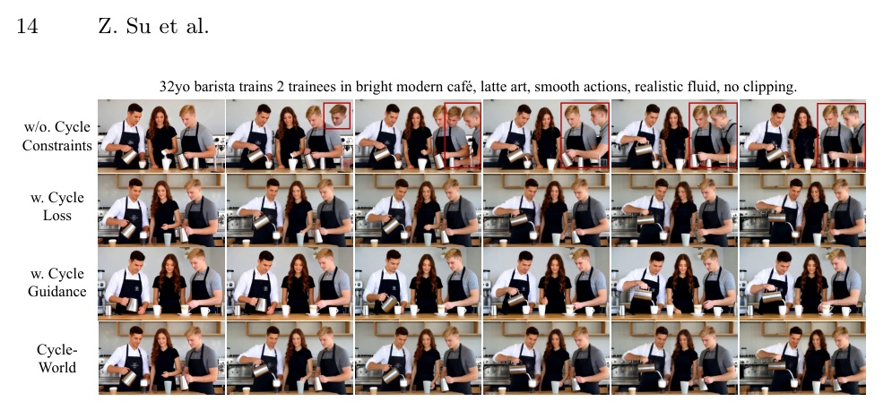

Cycle-World: Reverse-Prediction Cycle Consistency for Long Video World Models
A 60-second autoregressive video generator that asks each future latent: can your past still be reconstructed?
Long-horizon drift is treated as a reversibility failure, not just accumulated noise.
Cycle-World trains a reverse predictor and reuses it at inference time as a differentiable critic before bad latents enter the history buffer.
AR video models need memory, but memory also preserves mistakes
- Offline quality vs online generation: bidirectional/full-sequence models make strong clips, but are awkward for open-ended world-model rollouts.
- Exposure bias: training sees ground-truth history; inference conditions on its own imperfect outputs.
- Forward-only mitigation is incomplete: Diffusion Forcing / Self-Forcing / LongLive reduce generic noise, but do not verify whether a generated future still makes the past possible.
- Structural hallucination is sticky: clipping, disappearing objects, and identity shifts become part of the context and poison later chunks.
One theory, one training loss, one inference-time guardrail
- Cycle-Bounded Drift theorem: bound forward drift through reverse-prediction cycle error.
- Cycle-Consistent Learning (CCL): train a reverse model in latent space and backprop Lcycle into the forward generator.
- Intrinsic Latent Reversibility: avoid Decode-Flip-Encode by predicting the previous latent directly.
- Cycle-Guided Inference (CGI): plug in a frozen reverse model as a differentiable runtime corrector.
- Long-horizon validation: VBench 5s/60s plus PC/PACE physical consistency and ablations.
The same reverse model is used twice: training constraint and runtime critic

Cycle error is an upper-bound handle on forward drift
- en is accumulated latent drift at step n.
- dcycle(n) = || z_hatn-1 - Rphi(z_hatn) || measures whether the generated future can reconstruct the generated past.
- If the reverse model cannot infer the history, the current state likely left the natural video manifold.
A tiny single-step reversibility advantage becomes large when the rollout is long.
Cycle-World may look close to baselines on short clips; its claim is that the gap expands with n.
Make the forward generator pay for irreversible futures
Naive reverse training bottleneck
- Reversed videos do not produce latents that are trivially symmetric with forward latents.
- Decode-Flip-Encode would be costly and breaks joint training practicality.
Intrinsic Latent Reversibility
- Rphi(z_hatn) predicts the forward-ordered previous latent z_hatn-1.
- Cycle distance is direct vector subtraction in the shared latent manifold.
Cycle loss adds causal foresight to DMD-style forward training
- Lfwd preserves distribution-level visual fidelity for each generated chunk.
- Lcycle penalizes futures that look locally plausible but cannot reconstruct their history.
- Gradients from Lcycle flow through Rphi back into Gtheta, pruning divergent trajectories during learning.
- Reported implementation uses lambda = 0.1.
At inference, the reverse model becomes a frozen runtime critic
- Gtheta proposes a clean latent from the current denoising state and history cache.
- Rphi reconstructs the predecessor through a reverse cache, producing z_tilden-1.
- Compute D(zn,t) = || z_hatn-1 - z_tilden-1 ||22.
- Update zn,t by gradient descent before the final latent is appended to the historical context.
A practical construction on Wan2.1 / LongLive-style latent video models
- Reverse model initialized from pre-trained Wan2.1 1.3B; temporal flip latent trajectories during ODE initialization.
- Reverse model trained with self-forcing; Wan can serve as both teacher and critic.
- Forward generator is built on LongLive and tuned on 60-second sequences with one prompt switch.
- Forward LoRA fine-tuning: 3,000 iterations, batch size 4.
- CGI default: all denoising timesteps, K = 1 per timestep, eta = 10.
The long-horizon setting exposes drift that short clips hide
| Model | Horizon | Total | Quality | Semantic |
|---|---|---|---|---|
| Self Forcing | 60s | 71.86 | 77.20 | 50.51 |
| SkyReels-V2 | 60s | 70.47 | 75.30 | 51.15 |
| LongLive | 60s | 82.62 | 84.53 | 74.97 |
| Context Forcing | 60s | 82.45 | 83.55 | 76.10 |
| Ours | 60s | 82.88 | 84.39 | 76.86 |
The largest gain is in physics-aware evaluation
| Method | PC | PACE | Avg. |
|---|---|---|---|
| Self-Forcing | 55.97 | 78.57 | 67.27 |
| LongLive | 61.94 | 78.03 | 69.99 |
| RollingForcing | 67.91 | 75.05 | 71.48 |
| Infinity-RoPE | 60.45 | 78.58 | 69.52 |
| Ours | 69.40 | 81.91 | 75.66 |
- PC uses VideoPhy physical commonsense scoring.
- PACE is a Gemini LLM-as-a-Judge score over prompt compliance, gravity/mass, collision dynamics, motion continuity, and temporal coherence.
At 60 seconds, baselines lose identity or structure; Cycle-World keeps them

CCL and CGI solve different halves of the problem
| Variant | Total | Quality | Semantic | PC | PACE |
|---|---|---|---|---|---|
| Baseline | 83.72 | 85.42 | 76.95 | 61.94 | 78.03 |
| + CCL | 83.89 | 85.72 | 76.55 | 68.70 | 79.50 |
| + CGI | 84.51 | 86.37 | 77.05 | 65.67 | 78.80 |
| Cycle-World | 84.36 | 86.14 | 77.25 | 69.40 | 81.91 |
The dual-phase design is visible in rollout stability

- Full Cycle-World prevents trajectory drift and background degradation better than either component alone.
Cycle consistency is a counterfactual test: if this future is real, can it explain the past?
That test catches structural hallucinations earlier than image-level quality metrics, because impossible dynamics fail reverse reconstruction even when one frame looks fine.
On the hardest horizon, learned prior plus runtime critic is best
| Variant | PC | PACE | Avg. |
|---|---|---|---|
| Baseline | 59.45 | 75.71 | 67.58 |
| + CCL | 70.40 | 74.94 | 72.67 |
| + CGI | 62.77 | 76.67 | 69.72 |
| Cycle-World | 70.90 | 75.42 | 73.16 |
- CCL gives the strong physical prior.
- CGI preserves instance-level alignment.
- The full model recovers the best average over 60 seconds.
The regularizer has a real quality-vs-physics trade-off
Cycle-loss weight lambda
- lambda = 0.05: higher visual/semantic, but PC falls to 56.72.
- lambda = 0.2: stricter PC 68.66, but Total drops to 82.89.
- lambda = 0.1: reported balance.
Inference guidance
- 1 step across all 4 timesteps gives the best reported combined result.
- Putting all steps at the first timestep lowers PACE to 76.79.
- eta = 10 is the default balance; eta = 15 raises PC/PACE but lowers visual scores.
What has to be true for Cycle-World to hold
- Theory depends on the reverse model: reverse predictability and reverse-Lipschitz assumptions must be reasonable on the latent manifold.
- Plug-and-play is scoped: CGI needs the target model and reverse corrector to share the same Video VAE / latent space.
- Inference is not free: gradient refinement is inserted into denoising, even if K = 1 keeps it modest.
- PACE is evaluator-dependent: it is an LLM-as-a-Judge metric, not a human preference study.
- Architecture scope: evidence centers on Wan2.1 / LongLive-style latent AR diffusion.
If you build long video generators, add a backward critic before adding bigger context
- Do not only ask whether the next chunk is high quality; ask whether it remains causally compatible with history.
- Keep cycle checks in latent space when VAEs make pixel-space reversal expensive or mismatched.
- Separate parametric prior and runtime correction: one teaches the model where the manifold is, the other catches per-sample drift.
- Evaluate at long horizons; short 5s clips can hide the exact failure mode that world models care about.
Paper quote: the central premise
If a generated causal sequence obeys real-world dynamics, it must be temporally reversible.
如果生成的因果序列遵守真實世界動力學，它就應該具備時間可逆性。Sec.1 p.3
Paper quote: why the theory matters
The term (delta_unc - delta_cycle) represents the single-step advantage... this advantage is not merely additive, but scales with the sequence length n.
cycle error 的單步優勢不是簡單加法，而會隨序列長度放大。Sec.3.1 p.7
Paper quote: latent-space practicality
This approach eliminates the need for "Decode-Flip-Encode" loop... making joint training feasible.
把 cycle distance 放在 shared latent space，避免解碼-翻轉-再編碼，使 joint training 變得可行。Sec.3.2 p.8
Paper quote: active correction
This active rectification mechanism acts as a structural bottleneck, preventing inherent drift from manifesting as visual degradation.
推論時的主動 latent 修正形成結構瓶頸，讓 drift 在變成畫面劣化前被攔下。Sec.3.3 p.10
Tomorrow
Thursday rotation: computation acceleration - attention, kernels, and hardware-aware methods.